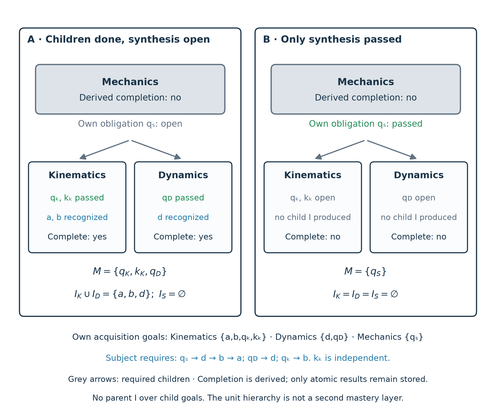

Learning Units (Lerneinheiten) (§§11.1–11.4)
Generated artifact. Do not edit manually.
Generated by:
docs/concept/skill-graph/build_spec.pyRegenerate with:cd app && npm run docs:skill-graph:webSource of truth:docs/concept/skill-graph/source/
Language / Sprache: English (EN) · Deutsch (DE) | PDF: English PDF · Deutsches PDF
Compendium: §§1–5 Core · §§6–10 Context · §§11.1–11.4 Units · §11.5 Progression · §12 Planning · §13 Implicit Mastery · Appendices B–F · Appendix A (Rules & Ampel)
11. Learning Units: From Learning Promise to Recursive Completion
The skill graph specifies which goals exist and what they require, yet it does not say which goals together form a coherent domain unit that a learner starts and completes as a recognizable whole. That responsibility belongs to a learning unit. This section defines a unit's scope, its derived completion, and the boundaries of prerequisites between whole units; Section 13 builds implicit mastery on top of it.
Domain Unit Rather Than Calendar Bucket
A learning unit (German Lerneinheit, future technical name LearningUnit) binds an understandable learning promise to its own learning goals and, where appropriate, smaller learning units – its child units. The structure is recursive: Mechanics may contain Kinematics and Dynamics, and Kinematics may in turn contain smaller units. School years, semesters, and study weeks are possible scheduling anchors rather than synonyms for a learning unit. Personalization Levels 1–4, QA maturity tiers, and the difficulty field level keep their existing meanings.
Purpose: A Secure Foundation Before Building On
A learning unit establishes solid, independent application of its promise before the planned course builds on it. Its assessments are designed to expose essential misconceptions: an exposed gap leads to focused further learning and a fresh, equivalent assessment, whereas a false completion would send learners onward on an unstable foundation. The ordinary grading contract applies unchanged – there is no hidden pass rule and no second stored outcome; an isolated slip with sound reasoning is judged differently from a missing central understanding. This is a didactic requirement of the unit definition, not a technical access lock (Section 11.5).
11.1. Motivation and Distinct Domain Claims
A learning unit answers first: What will I be able to do afterwards, and why does it matter? A motivational opening makes that promise tangible before individual tasks or goals are presented. That opening is a didactic role: when modeled as a genuine orientation goal, it follows the orientation completion contract (Section 8.2), whereas a synthetic heading never mints an extra learning goal. Derived unit completion never asserts that a motivational conversation actually took place.
A unit boundary follows a meaningful conceptual transition: which coherent understanding and application must be secure before something new depends on it? An existing assessment, a target quota, a tidy heading, or the density of prerequisite edges is at most an indicator, never the definition. Sparse, transitively minimal chains can form strong units, and shared elementary foundations do not force every later application into one giant unit. Edges are neither added nor removed to make a desired cut fit; a questionable edge is a separate subject-matter finding. A terminal or synthesis unit needs no later consumer to justify it. The design criteria and worked examples apply these criteria to two candidates.
Relative to its child units, a parent unit may make one of three distinct claims:
- Summarize (aggregate). The unit merely groups competencies already acquired in its children; in that case it needs no new assessment of its own.
- Integrate (synthesis). When the unit additionally promises independent integration across child competencies, its own synthesis assessment may test that integrative claim over competencies already acquired in child units, without inventing artificial new content goals. The role of a synthesis assessment is that extra integration proof rather than re-passing every child.
- Own domain competencies. A unit may also introduce genuine new domain competencies of its own, which require their own direct acquisition ownership and valid assessment coverage.
11.2. Direct Acquisition, Child Units, and Total Scope
An authoritative, versioned unit \(U\) is specified by three sets:
- \(\Own(U)\) denotes the directly assigned atomic acquisition targets – the unit's own goals. Genuine orientation, assessment, and memory goals may belong to \(\Own(U)\); synthetic structure markers never do.
- \(\Children(U)\) denotes the mandatory child units – the required children – after any authored choices have been resolved.
- \(T(U)\) denotes the deduplicated recursive goal set – the total scope – given by:
In Figure 10, Kinematics owns \(\{\nd{a}, \nd{b}, \nd{q_K}, \nd{k_K}\}\), Dynamics owns \(\{\nd{d}, \nd{q_D}\}\), and Mechanics owns only the synthesis assessment \(\{\nd{q_S}\}\); the total scope of Mechanics spans all seven goals.
Scope and ownership obey five rules:
- Resolved total scope is non-empty. An empty navigation marker is never a completed learning unit, whereas a pure aggregate may have empty \(\Own(U)\) provided its required children carry a non-empty total scope.
- Every acquisition target has exactly one directly owning unit: the smallest domain-responsible authoritative unit (rule R4 in Section 13.3). An ancestor view may display the same stable goals without claiming them again in \(\Own(U)\).
- Overlapping references unite as sets, minting neither duplicate goals nor double-counted progress points.
- Direct ownership of \(\Own(U)\) together with the domain-reviewed meaning of the unit's own assessments forms the unit's local contract (Section 13); switching focus never alters that ownership or contract.
- Every ordinary content goal in \(\Own(U)\) requires an own local assessment consumer – an assessment owned by \(U\) that requires it directly or transitively (R1) – and at least one such assessment needs reviewed evidence that its tasks and normal grading rubric really test the goal (R2). Section 13.3 lists all validity conditions R1–R5 and where each is enforced. Without them the local contract is invalid; an ad-hoc waiver mask never substitutes for it.
Embedding reuses the existing program and placement layers or reviewed composition views (Section 6). Following the Product Owner decision of 12 November 2026, learning units are declared in the placement layer of their skill landscape; the representation follows below. Expanding a UI cluster does not create a learning unit, nor does every contains cluster automatically become one; in particular, general cluster satisfaction from Section 4 remains distinct from the explicitly authorized unit hierarchy defined here.
Representation in the Skill Landscape.
A learning unit is part of its skill landscape. It lives in the existing placement layer (Section 6.2); no separate file accompanies the landscape, and goal objects carry no part of the unit contract. Table 5 maps the objects of this section and the parts of the local contract (Section 13.1) to their fields; the runtime schema defines them.
Table 5: Representation of a learning unit in the placement layer of its skill landscape (Product Owner decision of 12 November 2026).
| Object | Field | Rule |
|---|---|---|
| Unit \(U\) | programUnits entry with kind: "learningUnit", id, label, labelEn |
id is a lowercase slug, unique among the program units of the landscape; label is in the authoring locale, labelEn in English. |
| Learning promise | promise, promiseEn |
What learners can do independently afterwards and why it matters (Section 11.1). |
| \(\Own(U)\) | goalPlacements entries with relation: "own" and the unitId of \(U\) |
Each names an atomic goal of the same landscape and carries exactly goalId, unitId, and relation, hence no context; a goal has at most one owning unit (R4). |
| \(\Children(U)\) | parentUnitId on each child unit, naming \(U\) |
Both ends are learning units of the same landscape; a unit has at most one parent, and the hierarchy is acyclic. Every unit named this way is a required child. |
| \(T(U)\), \(\Complete(U)\) | not stored | Derived from own placements, the hierarchy, and explicit results (Section 11.3). |
| Reviewed meaning of own assessments (R2) | coverageReviews on the unit |
At most one entry per own assessment: assessmentGoalId, goalIds, reference (review record), taskRevision, rubricRevision, bound by hash to that assessment's task, solution, and rubric. A review never changes a goal. |
| Contract revision | revision (YYYY-MM-DD-vN) |
Names one state of the unit's contract; a change of own goals, parent, promise, or coverage reviews is a new revision. Not enforced yet; it becomes a hard rule with the runtime binding of results to a contract revision (R5). |
| Coverage claim | landscape field learningUnitCoverage |
partial or complete; absent means partial. Only complete requires an owning unit for every atomic goal of the landscape (R4). |
The declaration is closed: a learning unit carries exactly the fields above plus an optional order, any other field is a finding, and learning-unit fields on another kind of program unit are rejected as well. Goal kinds, prerequisites, and the coverage claims coveredGoalIds of assessments stay on the goals; a unit copies no goal data. Deliberately not representable are whole-unit prerequisites (Section 11.5), access locks, lists of waived or recognition-eligible goals, optional or alternative child units, and scope-specific ownership: an own placement carries no context, so ownership is the same in every resolved context. Calendar-style program units (program, stage, year, phase, semester, module, track, exam) and the relations primary, secondary, and assessed keep their meaning, and an own placement anchors nothing in the program view.
Curriculum-package contract 1.2 carries learning units as the capability learningUnitsV1 and ships each review record with its SHA-256; builds under contract 1.0 or 1.1 project the units out completely (Dual Curriculum Package Releases). Evidence about goals, edges, and assessments binds the same view, the skill landscape without its learning-unit layer: adding or changing a unit never invalidates it, while any other change still does. The repository validator validate:learning-units (validateLearningUnits.ts) and the independent package validator enforce the same rules against the same shared conformance cases; Section 13.3 states which validity rules are enforced, and Appendix B records the implementation status. No recognition is derived from learning units yet.
11.3. Completion Without Stored Unit Mastery
A learning unit is complete if and only if all of its own goals are effectively mastered and every required child unit is complete:
Completion is derived from atomic outcomes rather than persisted as a separate UnitMastery record that writes results back to children. Assessment and memory goals remain strictly explicit, so passing a parent assessment can replace neither an open child assessment nor missing verified card recall.
For the three unit forms from Section 11.1, this means the following. A pure aggregate may carry no assessment of its own, deriving completion from its required children and any other own obligations. A synthesis unit may carry an own synthesis assessment without new content goals; passing that synthesis assessment is then additionally required. A pure flashcard collection establishes no claim of independent domain application, and its explicit recall duties remain mandatory; recall obligations belonging to a child unit must never be hoisted to the parent merely to make the child appear complete.

Figure 10 — Mechanics as a recursive learning unit: Illustrative hierarchy with independent child contracts. Case A (left): both child units are complete and their skills are globally recognized; only the open synthesis assessment \(\nd{q_S}\) keeps parent completion open. Case B (right): only the parent assessment is passed; it satisfies neither child assessments nor memory recall nor child-unit recognition. Grey arrows denote the unit hierarchy alone; subject requires edges are listed separately underneath. Here \(\nd{q_K}\), \(\nd{q_D}\), and \(\nd{q_S}\) are assessment goals, \(\nd{k_K}\) is a memory goal, and \(\nd{a}\), \(\nd{b}\), \(\nd{d}\) are content goals. “Child \(I\)” and “Parent \(I\)” denote each unit's implicit set \(I_U\).
11.4. Recognition Before Full Unit Completion
Under the binding target concept – which is not yet implemented on main – passing an appropriate local assessment can recognize a unit's own content goals before an independent flashcard deck or sibling child unit is finished, provided that no other open own assessment or memory goal of the unit still requires them (Section 13.2). That recognition is globally effective, and a still-open parent synthesis assessment does not withdraw it.
Recognition is therefore computed solely over each unit's own goals excluding assessment and memory goals. A parent unit never forms an enlarged recognition scope over all of its descendants; otherwise passing a parent assessment could bypass subordinate child assessments or card-recall duties. A parent assessment may attest additional integration without retroactively expanding what child contracts certify. Section 13 states the exact formula and its task-authoring conditions.